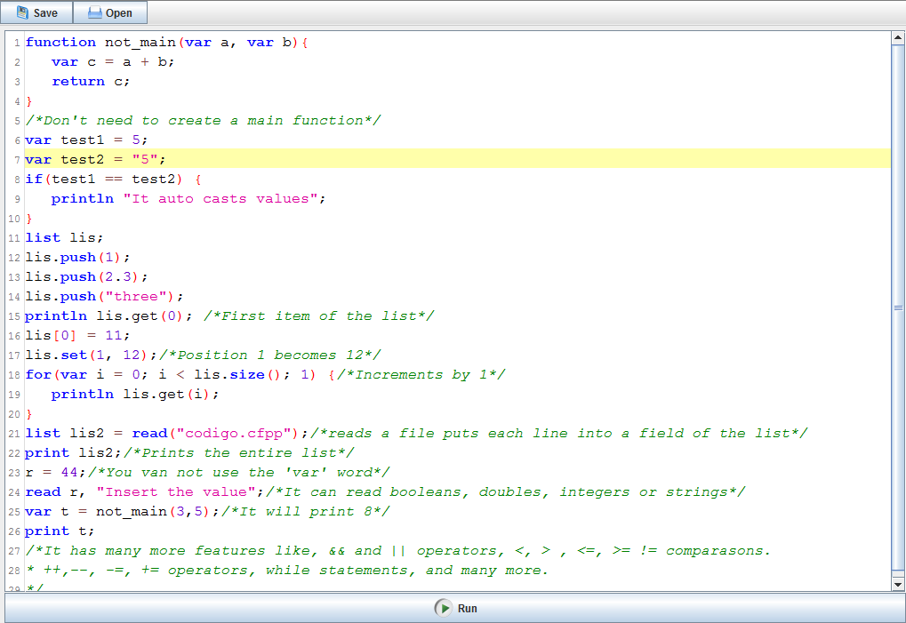
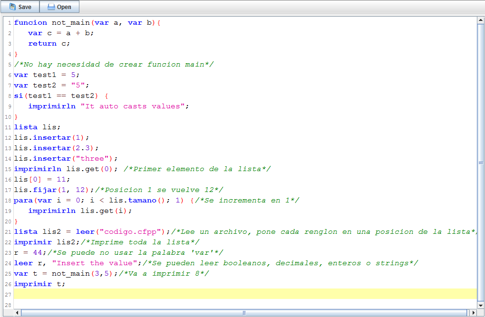

Programming language, designed to teach kids how to code, it has features that makes it easier to code, so kids are focused on learning how to code and not the syntax of the language.
For example, it works if you forget to use a semicolon, or if you write False or false; and other features that you can see in the example
You can help us forking the code and adding features, or translating it to other languages
The language currently supports English and Spanish for the reserved words, for example if can be written as "si" or while as "mientras", this can useful if you are teaching to people who don't speak English
If you find an issue or want us to add a feature Click here
Example of code:
function not_main(var a, var b){
var c = a + b;
return c;
}
/*Don't need to create a main function*/
var test1 = 5;
var test2 = "5";
if(test1 == test2) {
println "It auto casts values";
}
list lis;
lis.push(1);
lis.push(2);
lis.push("three");
println lis.get(0); /*First item of the list*/
lis[0] = 11;
lis.set(1, 12);/*Position 1 becomes 12*/
for(var i = 0; i < lis.size(); 1) {/*Increments by 1*/
println lis.get(i);
}
list lis2 = read("codigo.cfpp");/*reads a file puts each line into a field of the list*/
print lis2;/*Prints the entire list*/
r = 44;/*You can skip the 'var' word*/
read r, "Insert the value";/*It can read booleans, doubles, integers or strings*/
var t = not_main(3,5);/*It will print 8*/
print t;
/*It has many more features like, && and || operators, <, > , <=, >= != comparasons.
* ++,--, -=, += operators, while statements, and many more.
*/
This is an example of the editor used.
This is an example of the editor used in spanish. You can mix, both languages in the same code / Ejemplo del codigo usasdo en español
Authors and Contributors
Alfredo Sanatamaria(@a-santamaria), Daniel Serrano (@dserrano3)